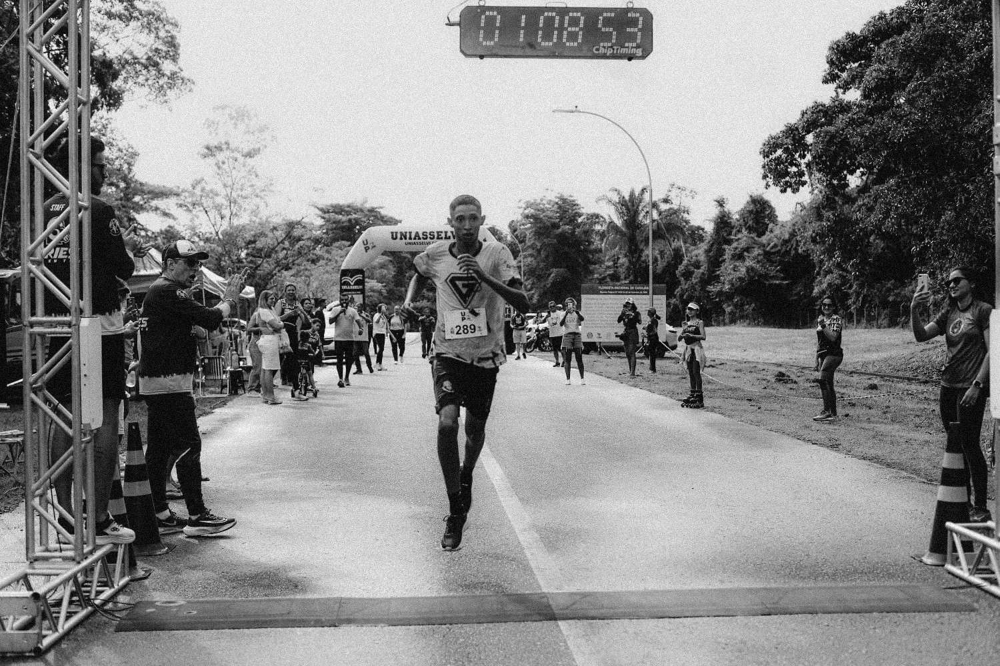
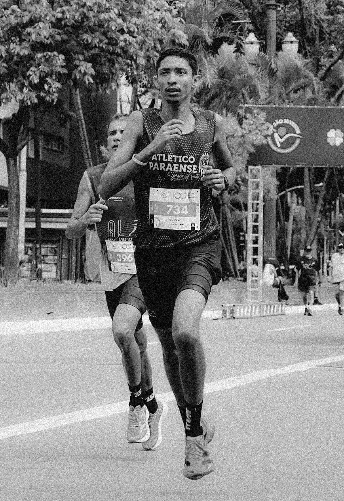
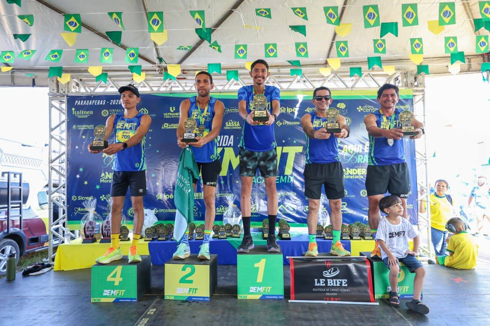
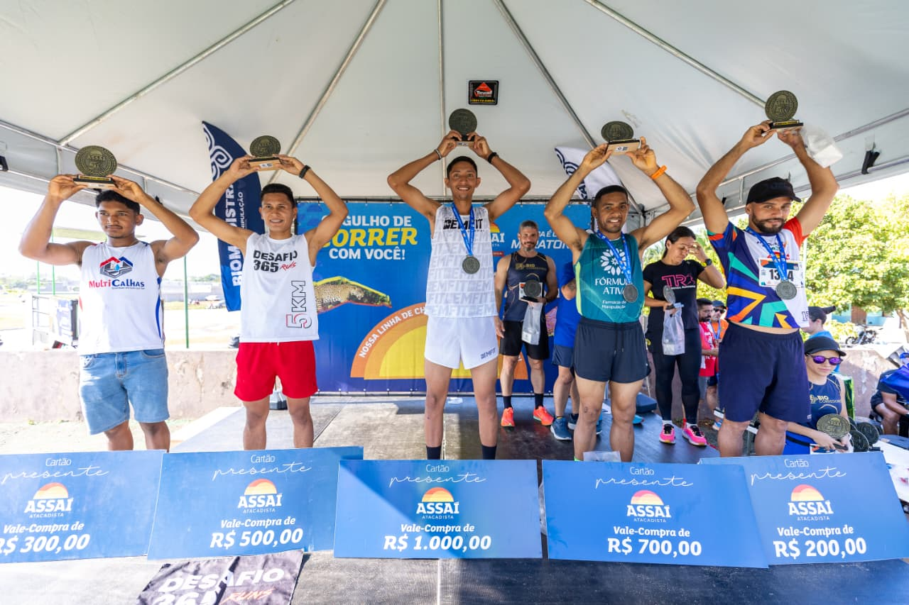
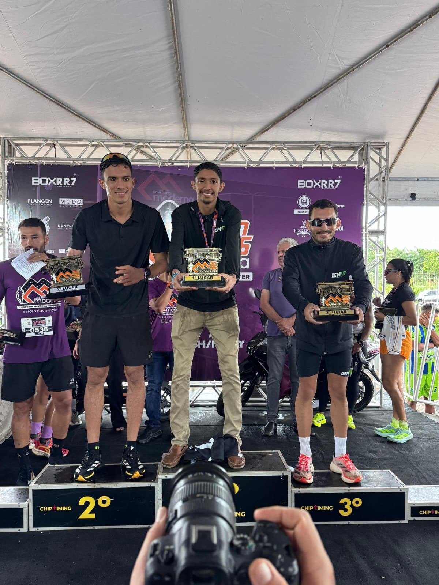
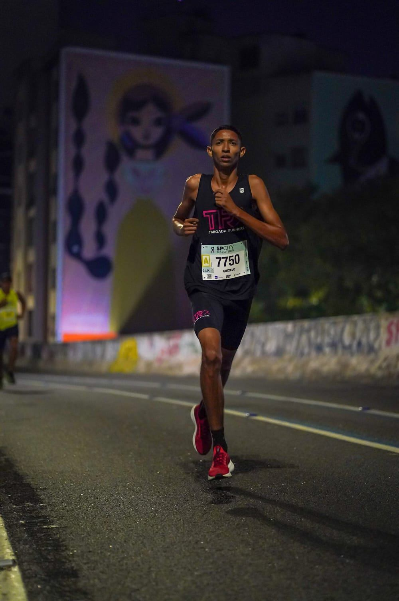
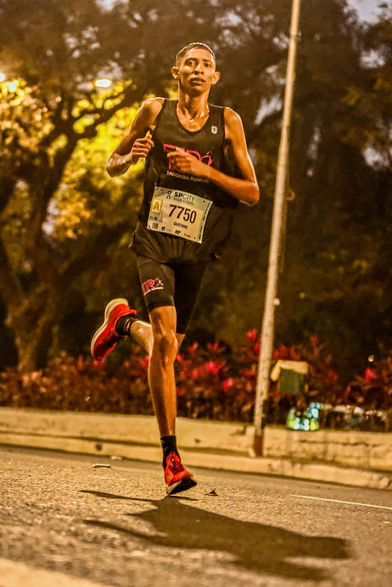
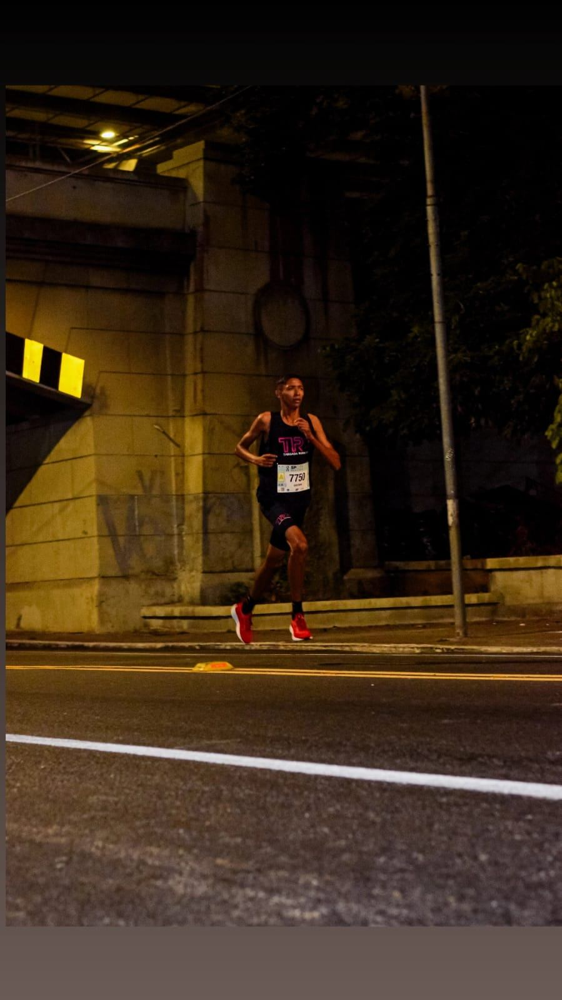

Atletismo
Corrida de Rua
Provas de rua em circuitos regionais e estaduais, com foco em performance competitiva.

Atletismo · Corrida de Rua/Pará · Brasil
“A linha de chegada é só o resumo. A vitória acontece todos os dias, antes do sol nascer.”

02 Sobre o atleta
Meu nome é Gustavo Pereira Lima e sou atleta de atletismo, dedicado ao alto rendimento e à evolução constante.
Com disciplina, foco e comprometimento, venho conquistando resultados de destaque em competições regionais. Minha rotina é voltada aos treinamentos e às competições, sempre em busca de novos desafios e melhores resultados.
Meu objetivo é evoluir no cenário estadual e nacional, representando com excelência os parceiros que acreditam no meu trabalho.
03 Perfil esportivo
Provas de rua em circuitos regionais e estaduais, com foco em performance competitiva.
Do ritmo forte dos 5 km e 7 km à resistência da meia maratona.
Período de evolução contínua, com participação constante no calendário de provas.
04 Principais conquistas 2026
Canaã dos Carajás · 2026
Parauapebas · 2026
2026
2026

05 Resultados
06 Competições & linha do tempo
Começo da trajetória competitiva com treinos diários e participação nas provas da região.
Rotina intensa de competições em 5 km, 7 km, 10 km e 21 km, com presença constante entre os primeiros colocados.
Estreia em provas de nível estadual, com 1 pódio conquistado — passo importante rumo ao alto rendimento.
1º lugar na Corrida da Moderna (Canaã), Corrida BemFit e Corrida ÔmegaService; 2º lugar na Corrida de São Sebastião (Parauapebas).
Ampliar a participação em provas estaduais e nacionais, buscando novas marcas pessoais nos 7 km, 10 km e 21 km.
07 Galeria de fotos





08 Objetivos 2026 / 2027
09 Proposta para patrocinadores
Patrocinar um atleta é associar sua marca a disciplina, superação e resultado. É estar presente em cada prova, em cada foto de pódio e em cada história compartilhada.
10 Contato & redes sociais